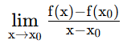

Differenzierbarkeit von f bei x0
Linksseitiger Grenzwert der Differenzenquotientenfunktion:

(x<x0)Rechtsseitiger Grenzwert der Differenzenquotientenfunktion: (x>x0)
Ist der linksseitige gleich dem rechtsseitigen Grenzwert der Differenzenquotientenfunktion, so ist f differenzierbar bei x0. Es existiert dann die Ableitung f'(x0), die Steigung der Tangente an den Graphen im Punkt (x0 / f(x0)).
Wählen Sie zuerst, ob x → x0 oder x → x1 gehen soll.
Wählen Sie nun, ob Sie den Grenzwert linksseitig oder rechtsseitig betrachten wollen.
Verschieben Sie dann (bei gedrückter Maustaste) den roten Punkt gegen den blauen Punkt.
Alternativ können Sie auch durch Klicken auf 'Step' die Annäherung schrittweise vollziehen.
- Sekantensteigung:
- Sekantensteigung:
Die Funktion f(x) ist an der Stelle x0 stetig, weil
der Grenzwert der Funktion f für x → x0 existiert und gleich dem
Funktionswert f(x0) ist. Sie ist auch an der Stelle x0
differenzierbar, weil der linksseitige Grenzwert der Differenzenquotientenfunktion mit dem rechtsseitigen
Grenzwert identisch ist (es ex. also die Ableitung f'(x0)).
Die Funktion f(x) ist an der Stelle x1 ebenfalls differenzierbar, weil der
linksseitige Grenzwert und der rechtsseitige Grenzwert der Differenzenquotientenfunktion
übereinstimmen (es ex. also die Ableitung f'(x1)).
Siehe auch Einseitige Ableitung
©1997 - 2026 www.mathematik.ch |🔍